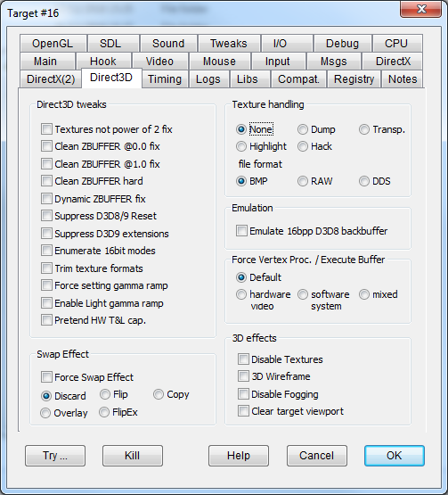

|
Textures not power of 2 fix |
NOPOWER2FIX |
Some games don't properly check whether the hardware can properly manage textures whose sizes are not a power of 2 (e.g. 16, 32, 64, 128 bits). If textures of a different size are processed by hardware without this capability, you get diagonal effects on the rendered image. The option fixes this problem. |
|
Clean ZBUFFER @0.0 fix |
ZBUFFER0CLEAN |
Some games don't properly clear the zeta buffer between frames, producing incorrect surface z-ordering and other issues. This flag fixes this problem. For an example, see Examples > SnowBoard: Racer. |
|
Clean ZBUFFER @1.0 fix |
ZBUFFERCLEAN |
Some games don't properly clear the zeta buffer between frames, producing incorrect surface z-ordering and other issues. This flag fixes this problem. It is similar to ZBUFFER0CLEAN, but it works in different contexts. |
|
Clean ZBUFFER hard |
ZBUFFERHARDCLEAN |
Fixes "Star Wars Ep.1 Racer" ZBuffer problems producing the same effect as the "Clean ZBUFFER @1.0" flag but using a quite different approach. It is called "hard" because it is a little "rude", you're not supposed to write directly on top of the ZBuffer surface, but it works! |
|
Dynamic ZBUFFER fix |
DYNAMICZCLEAN |
Needed to fix some of "Tonic Trouble" rendering problems. |
|
Suppress D3D8/9 Reset |
NOD3DRESET |
Do not perform the D3D reset operation. |
|
Suppress d3d9 extensions |
SUPPRESSD3DEXT |
D3d9.dll comes in different versions depending on the platform: on older windows releases it exports the Direct3DCreate API, while in more recent versions there are many further exported calls. This flag suppresses the additional entries. |
|
Enumerate 16bit modes |
ENUM16BITMODES |
On Windows 10, the list of available video modes (see DirectDraw8/9::EnumAdapterModes) may not include those with color depths lower than 32bpp while no fullscreen programs are running (known as "desktop composition mode"). This may impact games that need 8- or 16-bit color depth. This flag forces the inclusion of modes with 16-bit color depth. This option may help when a Direct3D8/9 program running on Windows 10 lacks the proper video mode and terminates. |
|
Trim texture formats |
TRIMTEXTUREFORMATS |
Emulates the "DirectXTrimTextureFormats" shim as closely as possible. Trims the ZBufferFormats so that no more than 3 entries are enumerated, in growing color depth order, and 32-bit formats are omited. For an example, see Examples > Heavy Gear 2. |
|
Force setting gamma ramp |
FORCED3DGAMMARAMP |
Enable gamma ramp control from windowed game, though changing the whole desktop. Makes "Morrowind" more playable. |
|
Enable Light gamma ramp |
LIGHTGAMMARAMP |
To enable gamma ramp correction in D3D lights. See Gamma control. |
|
Pretend HW T&L cap. |
TRANSFORMANDLIGHT |
Pretends that the video card has hardware transformation and light capabilities. This is not necessary since DirectX can emulate T&L by software transparently to the application, but some games make a check for this capability and refuse to run if it is missing, so this flag makes them running. |
These flags help modders manage game textures. In particular, they can highlight where textures should be used, extracting them as bitmaps, or replace textures with custom ones. Use the Dump flag to extract textures, or the Hack flag if you plan on using a graphics editor to create customized replacement textures.
|
None |
The default behavior. Does not apply special handling to textures. |
|
|
Highlight |
TEXTUREHIGHLIGHT |
All hooked textures are replaced with a randomly-generated solid color. This makes it easier to see texel boundaries and texture usage. |
|
Dump |
TEXTUREDUMP |
All hooked textures that match the criteria in the Texture section of your dxwnd.ini configuration file are extracted as bitmap files and dumped into DxWnd's "texture.out" subfolder. The automatic filenames include a hash of the file's graphical content to make it easier to uniquely identify each texture. |
|
Hack |
TEXTUREHACK |
This option replaces all hooked textures by calculating hashed filenames, looking for those names in DxWnd's "texture.in" subfolder, and using any matching textures that it finds there. |
|
Emulate 16bpp D3D8 backbuffer |
D3D8BACK16 |
D3D8 16bpp backbuffer emulation on 32bpp color depth. Fixes "Dangerous Waters" on 32bpp Win8-10 systems. |
This option allows you to make experiments with different vertex processing settings for D3D8/9. When setting D3DCREATE_MIXED_VERTEXPROCESSING or D3DCREATE_SOFTWARE_VERTEXPROCESSING it also trims down the D3DCREATE_PUREDEVICE flag that is incompatible with these two and causes a D3D error.
NOTE: Changing this option to software or mixed may help with rendering problems. (Virtual Skipper 5)
|
Default |
||
|
hardware |
FORCEHWVERTEXPROC |
Hardware setting uses the video card (GPU). |
|
software |
FORCESWVERTEXPROC |
Software setting uses the system (CPU). Win10 anniversary update seems to default to software mode which can cause performance issues. |
|
mixed |
FORCEMXVERTEXPROC |
Forces Swap Effect
FORCESWAPEFFECT
This experimental flag forces the selected SwapEffect mode during the CreateDevice/Reset methods. In some cases, it may improve compatibility or performance. You can choose from the following modes:
Discard
Flip
Copy
Overlay
FlipEx
|
Disable Textures |
NOTEXTURES |
Remap all textures with a white texture (Direct3D only). |
|
3D wireframe |
WIREFRAME |
Show graphics in wireframe mode. This option works with Direct3D and OpenGL programs, but not with DirectDraw programs. |
|
Disable Fogging |
DISABLEFOGGING |
Disables the fogging effect (Direct3D only). |
|
Clear target viewport |
CLEARTARGET |
Forcefully invokes the Direct3D "Clean" method on the target surface every time the "BeginScene" method is invoked. Most games already do this, but some omit it because there were no undesired effects on the computers that were in use at the time. Running these games in windowed mode on modern platforms may show trails of previous frames. This flag cleans up graphical artifacts from old frames, resolving this issue. |